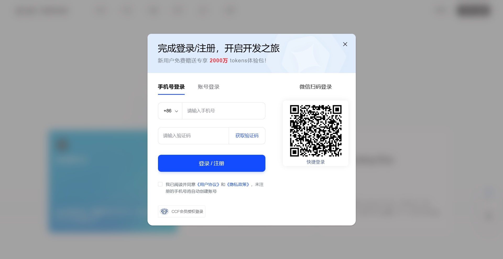
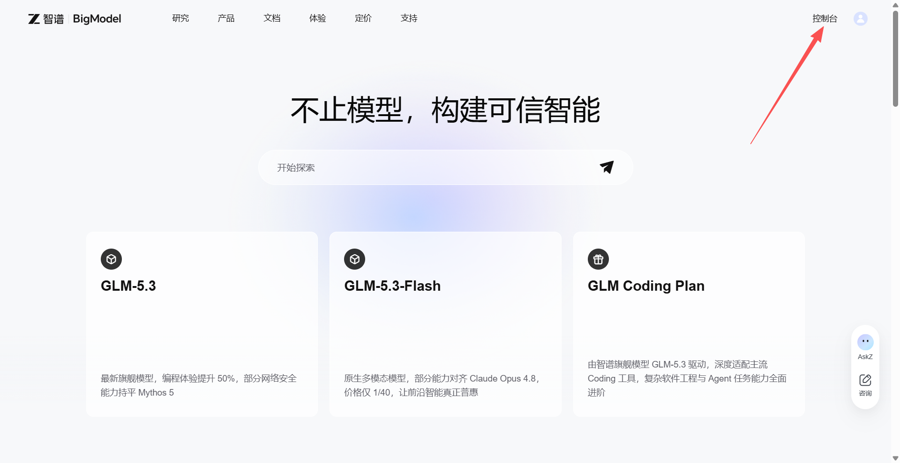
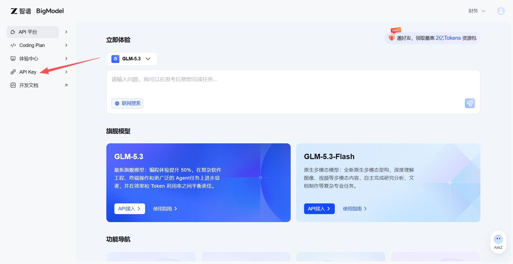
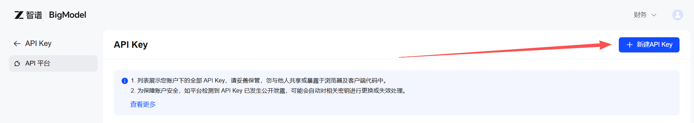
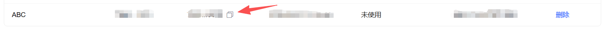

2登录或注册账号
推荐用微信扫码登录（最快），也可以用手机号验证码登录。新用户注册即送免费额度。

3进入控制台
登录后，点击右上角「控制台」进入开发者后台。

4打开 API Key 管理
在左侧菜单栏找到「API Key」并点击。

5新建 API Key
点击右上角蓝色「新建 API Key」按钮，名称随意填写（如"零号工具"），点击确定。

6复制 API Key
在列表中找到刚创建的 Key，点击复制按钮（📋）。复制后请妥善保管，不要泄露给他人。

💡 智谱免费模型包含 GLM-4.7-Flash（文本对话）和 GLM-4V-Flash（图片理解），均永久免费，足够日常使用。高峰时段可能因厂商服务过载而报错，稍后重试即可。